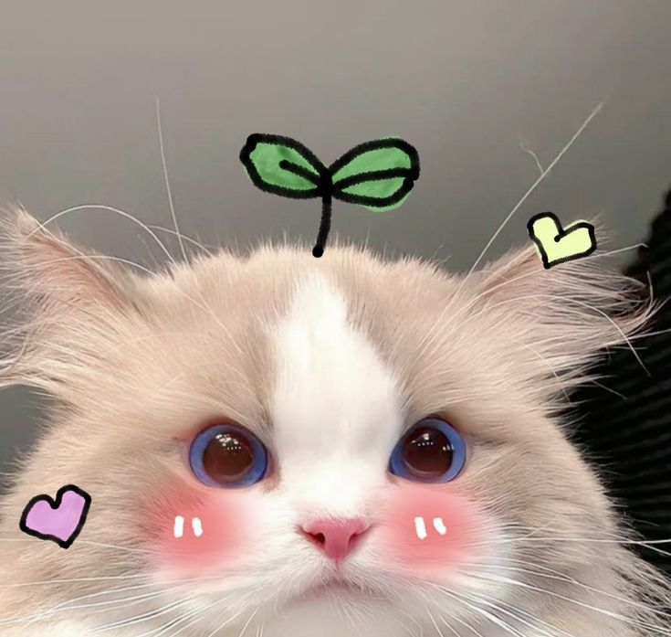

Halaman Utama
Kucing adalah salah satu hewan peliharaan yang paling populer di dunia. Memiliki tubuh yang lincah, bulu lembut, dan gerakan yang anggun, kucing sering dianggap sebagai simbol keanggunan dan misteri. Hewan ini dikenal sangat adaptif dan bisa hidup di berbagai lingkungan, mulai dari pedesaan hingga perkotaan. Selain itu, kucing memiliki naluri berburu yang tajam, meskipun mereka sudah lama hidup berdampingan dengan manusia. Kepribadian kucing sangat beragam; ada yang manja dan suka diperhatikan, tetapi ada juga yang lebih mandiri dan suka menjelajah sendiri. Kucing bukan hanya hewan yang menarik secara fisik, tetapi juga memiliki manfaat emosional bagi pemiliknya. Interaksi dengan kucing, seperti membelai atau bermain bersama, dapat membantu meredakan stres dan meningkatkan suasana hati. Selain itu, kucing relatif mudah dirawat dibandingkan dengan hewan peliharaan lain, karena mereka dikenal sangat menjaga kebersihan dirinya. Meskipun demikian, pemilik kucing tetap harus memperhatikan kebutuhan dasar seperti makanan bergizi, perawatan kesehatan, dan kasih sayang agar kucing tetap sehat dan bahagia. Keunikan dan kedekatan yang terjalin dengan kucing membuat mereka menjadi sahabat setia bagi banyak orang.
